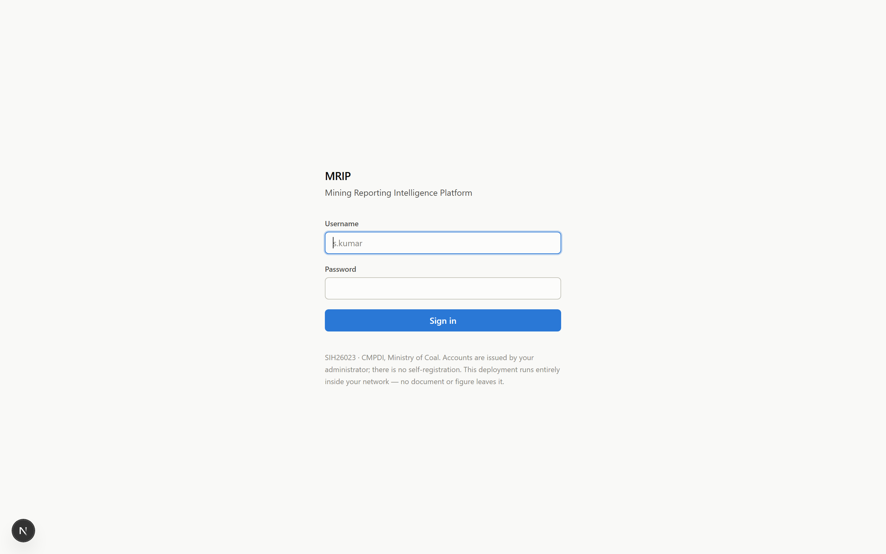
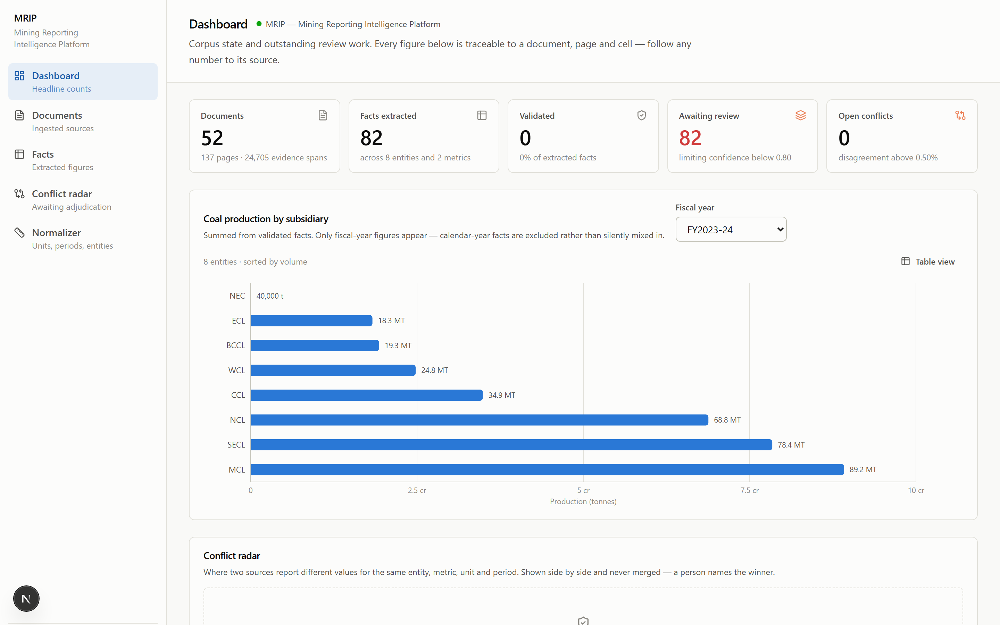
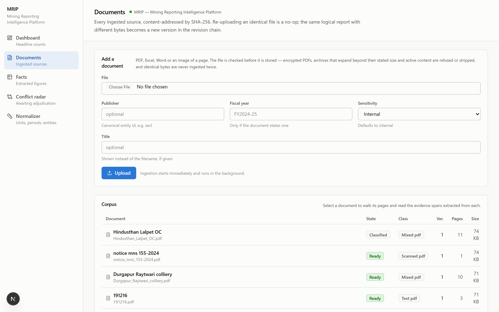
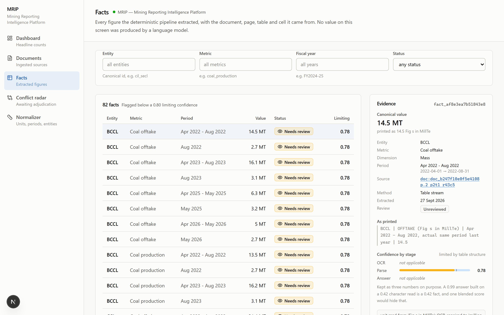

Sign in — on-premise, no self-registration, nothing leaves the network

Dashboard — headline counts & production by subsidiary

Documents — every source, content-addressed by SHA-256

Facts — every figure traced to document · page · cell
